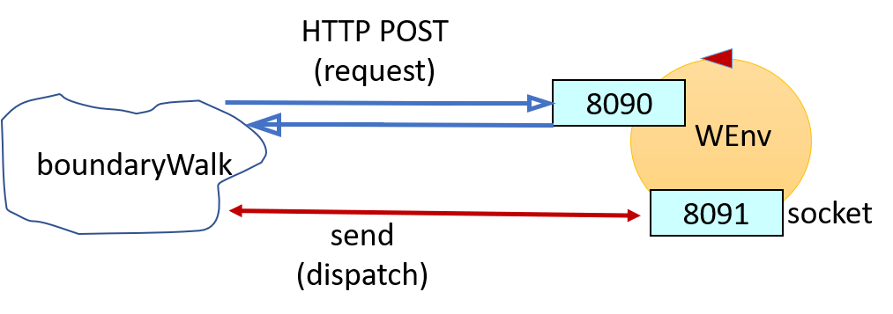

Introduction
Requirements
Requirement analysis
As a results of the
client interview, it has been clarified that:
-
The robot is a device able to move forward, backward, turn 90 degrees on the right
and on the left; the robot can receive remote commands through Internet; it can detect shock using
two sensors, one on the front and on the back;
-
The robot should "walk", intended as "move forward", staying near the walls of a normal, empty room and
it has to clear a full lap of the perimeter of that room;
User story
Test plan
The goal is to verify if the path run by the robot matches with the perimeter of the room.
The test should be executed via software, without the needs of human interactions.
Problem analysis
-
Sub-systems: the system requested can be seen as two interacting sub-systems: the client's robot,
which will act substantially as a server for the second sub-system, and an application (buondaryWalk)
responsible to send remote commands to the robot;
-
Communications: boundaryWalk can communicate with the robot using two different protocols:
-
HTTP protocol, sending POST messages on port 8090;
-
WebSocket protocol, sending messages to a socket on port 8091;
BoundaryWalk should be built in such a way that its application logic is as independent as possible from
the used communication protocol.
The messages boundaryWalk send to the robot should be in the following JSON format:
{"robotmove":"MOVE", "time":"T"}
where:
-
MOVE can be turnLeft, turnRight, moveForward, moveBackward or alarm;
-
T is a natural number which represent the duration on MOVE in milliseconds;
After the execution of a move, the robot sends back, using the communication protocol used by the client, an answer
containing the executed move and its results:
{"endmove":"RESULT", "move":"MOVE"}
If RESULT is false, then the move has aborted (e.g. the robot has hit an obstacle).
Logical architecture
The following logical architecture of the system will use the graphic formalism depicted in
legenda.png:

Test plans
A possible strategy to test the system is stated by the following algorithm:
for 4 times:
move forward until an obstacle is hit;
check if you are in a corner;
turn left;
if detected 4 corners:
test passed
else:
test failed
The robot will move using short time intervals for the moveForward actions, so that it has to do more steps
to reach the walls at the other end of the room.
To check if the it is in a corner, the robot has to perform extra moves besides the ones that allow it to walk
along the perimeter of the room. This set of moves should be executed only during the test.
When a wall is reached, the following sequence of commands can be used to check if the robot is in a corner:
FWD_1: {"robotmove":"moveForward", "time":150}
{"robotmove":"turnRight", "time":150}
FWD_2: {"robotmove":"moveFordward", "time":150}
If both FWD_1 and FWD_2 moves fail, then a corner is detected.
The test is successfull if exactly 4 corners have been detected.
{kind=link}